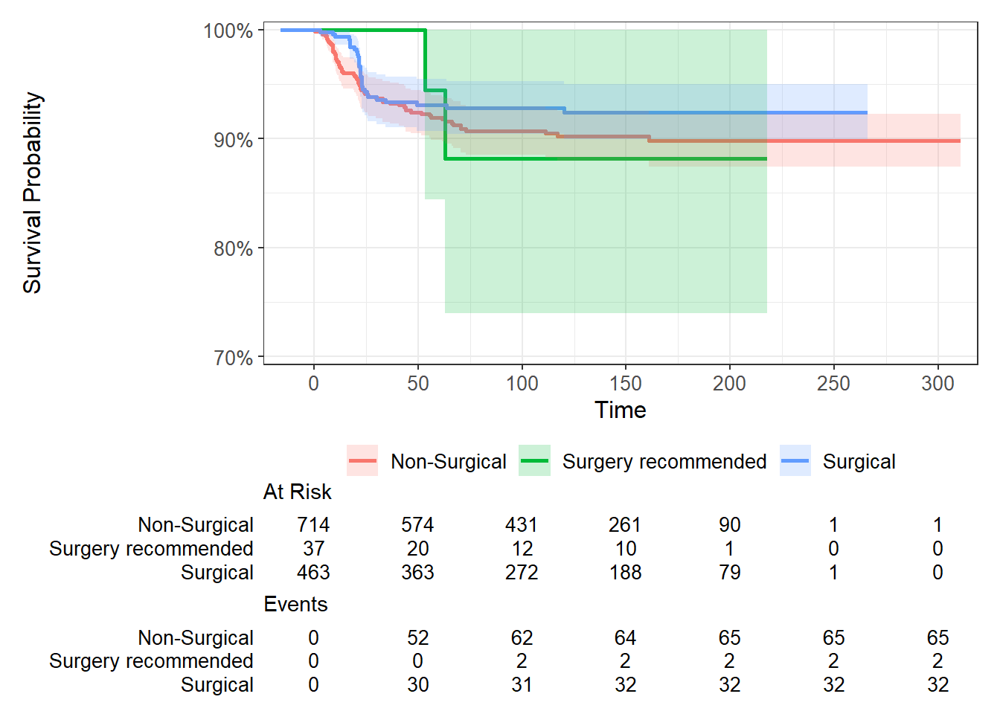
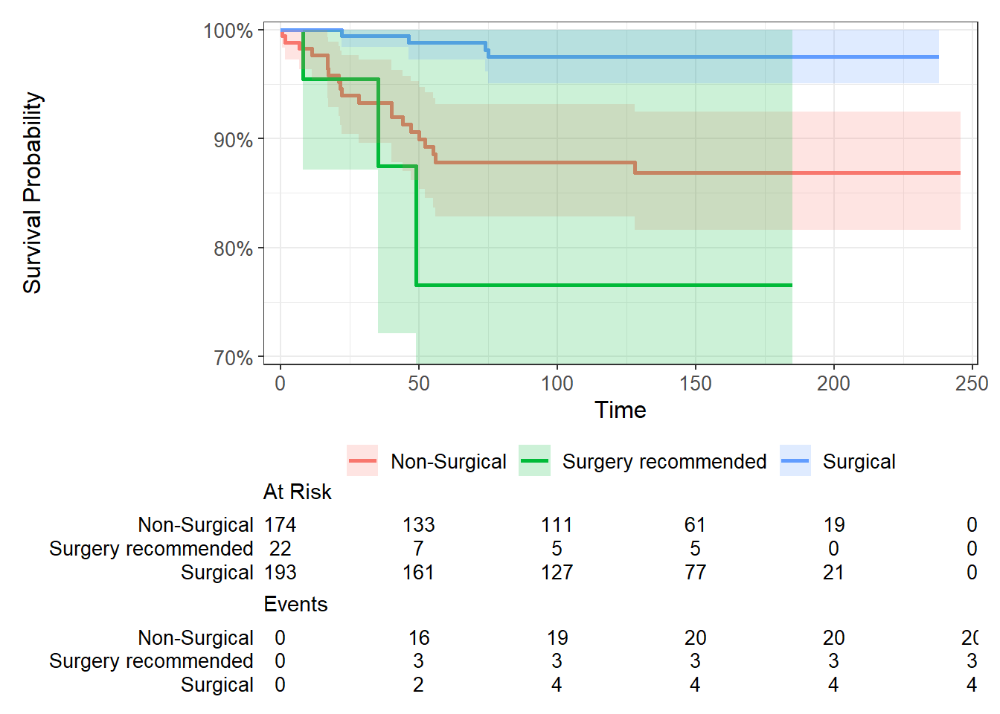

PRULO_Governance
1 Preamble
The following analysis is a report on the activity, quality and data contained in the PRULO registry.
Analysis packages were loaded initially into the R environment.
Access to the PRULO datasets was pre-authorised.
A function was generated to retrieve files using the googledrive package, to call on later in the analysis for processing data imports.
Data was retrieved from live database tables. Source files were specified and stored as global variables to call on in further functions.
A static registry snapshot was retrieved and formatted based on the fixed date of preparation of the snapshot (31-Mar-2025).
2 Context
PRULO (Patient Registry of Upper Limb Outcomes) is a clinical quality registry supporting the practices of two surgeons in Geelong, Victoria. It has been in operation since June 2020 and has three designed cohorts - Rotator Cuff; Glenohumeral Instability and a General cohort for all other shoulder pathology.
3 Recruitment Flow by Region
Flowcharts as per STROBE (Vandenbroucke et al. 2007) and RECORD (Benchimol et al. 2015) guidelines were generated for treatments enrolled into the Registry. Followup was set to eligibility at 12months.
Cumulative recruitment over time was plotted from Registry inception to the present.

4 Missingness and Compliance
4.1 Baseline and Intraoperative

Missingness for baseline PROMs (represented by EQ5D) and intraoperative data is captured in Figure 3. Intraoperative data was captured slightly differently between cohorts, so multiple fields have been utilised to illustrate intraoperative capture across cohorts.
Overall, there are variable response rates for baseline scores across cohorts. This may reflect variable engagement during consultant clinics. We have also identified a system issue that is impeding scores from being sent to patients that are being re-categorised from one cohort to another. This is predominantly affecting cases that have limited information on their referral and are subsequently moved from the General cohort.
4.2 Patient-reported Outcomes by TimePoint


The cumulative results of the Registry illustrate difficulty in engaging patients beyond short term followup.
4.3 Baseline by Year


The results displayed in Figure 8 helped to identify the system issue preventing cohort-specific scores being resent to cases that were transferred from one cohort to another. This has now been rectified and eligible cases have been resent links to complete the required questionnaires.
5 Cohort Analysis
The EQ5D is a general health questionnaire that is presented to all patients enrolled in the registry.

Between-cohort variability is observed for the Physical Component Score of the VR12, but not as pronounced for the Mental Component Score. Most notable is the high variation within all cohorts for both VR12 component scores.


5.1 Diagnosis Tabulation
| Non-Surgical | Surgical | NA | ||
|---|---|---|---|---|
| GlenohumeralInstability | S43.0 Dislocation of [glenohumeral] joint | 89 | 55 | 13 |
| S43.42 Injury of labrum of the shoulder joint | 34 | 66 | 7 | |
| M25.31 Other instability of Glenohumeral joint | 33 | 33 | 9 | |
| M24.4 Recurrent dislocation and subluxation of joint | 26 | 30 | 14 | |
| M24.21 Glenohumeral instability secondary to old ligament injury; Ligamentous laxity not otherwise specified | 5 | 5 | 2 | |
| M24.91 Glenohumeral derangement, unspecified | 6 | 1 | 0 | |
| S42.14 Fracture of glenoid cavity of scapula | 1 | 3 | 0 | |
| T84.6 - Infection and inflammatory reaction due to internal fixation device | 2 | 0 | 1 | |
| RotatorCuff | M75.1 Rotator cuff syndrome; Rotator cuff or supraspinatus tear or rupture (complete)(incomplete), not specified as traumatic | 392 | 284 | 92 |
| S46.0 Injury of muscle(s) and tendon(s) of the rotator cuff of shoulder; traumatic tear | 100 | 106 | 11 | |
| S43.43 Sprain and strain of Rotator cuff capsule | 101 | 19 | 15 | |
| M75.3 Calcific tendinitis of shoulder | 40 | 21 | 6 | |
| S46.1 Injury of muscle and tendon of long head of biceps | 42 | 14 | 6 | |
| M25.51 Pain in shoulder | 46 | 3 | 3 | |
| M75.4 Impingement syndrome of shoulder | 23 | 10 | 2 | |
| M75.2 Bicipital tendinitis | 8 | 6 | 1 | |
| ShoulderGeneral | M19.0 Primary arthrosis of other joints | 298 | 236 | 67 |
| M75.0 Adhesive capsulitis of the shoulder | 185 | 59 | 12 | |
| S42.0 Fracture of clavicle | 30 | 42 | 2 | |
| M12.0 - Other specific arthropathies | 39 | 32 | 4 | |
| S42.2 Fracture of upper end of humerus | 54 | 17 | 8 | |
| S43.5 Sprain and strain of acromioclavicular joint; Acromioclavicular ligament | 51 | 19 | 4 | |
| M75.5 Bursitis of shoulder | 26 | 5 | 13 | |
| S43.1 Dislocation of acromioclavicular joint | 17 | 14 | 0 | |
| M75.6 Tear of labrum of degenerative shoulder joint | 15 | 13 | 1 | |
| Z00.0 - Unknown | 15 | 2 | 83 | |
| S42.1 Fracture of scapula | 13 | 1 | 0 | |
| S46.1b Injury of muscle and tendon of long head of biceps | 13 | 1 | 0 | |
| T84.8 - Other complications of internal orthopaedic prosthetic devices, implants and grafts | 10 | 3 | 1 | |
| T84.0 - Mechanical complication of internal joint prosthesis | 2 | 9 | 1 | |
| M67.4 Ganglion | 5 | 2 | 0 | |
| M24.0 Loose body in joint | 2 | 3 | 0 | |
| S42.3 Fracture of shaft of humerus | 3 | 2 | 1 | |
| M25.5 Pain in joint | 3 | 1 | 0 | |
| M24.2 Joint instability secondary to old ligament injury; Ligamentous laxity not otherwise specified | 2 | 1 | 0 | |
| M65 Synovitis and tenosynovitis | 3 | 0 | 0 | |
| M87.0 - Idiopathic aseptic necrosis of bone | 2 | 1 | 0 | |
| S42.8 Fracture of other parts of shoulder and upper arm | 2 | 1 | 0 | |
| T14.6 Injury of muscles and tendons of unspecified body region | 1 | 2 | 0 | |
| D17.2 Benign lipomatous neoplasm of skin and subcutaneous tissue of limbs | 0 | 2 | 0 | |
| M25.3 Other instability of joint | 2 | 0 | 1 | |
| S42.9 Fracture of shoulder girdle, part unspecified | 1 | 1 | 0 | |
| S43.2 Dislocation of sternoclavicular joint | 2 | 0 | 0 | |
| S43.41 Sprain and strain of Coracohumeral (ligament) | 2 | 0 | 1 | |
| S43.6 Sprain and strain of sternoclavicular joint | 2 | 0 | 0 | |
| T84.4 - Mechanical complication of other internal orthopaedic devices, implants and grafts | 0 | 2 | 0 | |
| M24.10 Other articular cartilage disorders, unspecified site | 0 | 1 | 0 | |
| M24.5 Contracture of joint | 1 | 0 | 1 | |
| M66.4 Spontaneous rupture of other tendons | 0 | 1 | 0 | |
| M75.3b Calcific tendinitis of shoulder | 0 | 1 | 0 | |
| M89.0 Algoneurodystrophy | 0 | 1 | 0 | |
| S49.8 Other specified injuries of shoulder and upper arm | 1 | 0 | 0 | |
| T84.1 - Mechanical complication of internal fixation device of bones of limb | 1 | 0 | 0 | |
| T84.5 - Infection and inflammatory reaction due to internal joint prosthesis | 0 | 1 | 0 | |
The initial tabulation (Table 1), shows the current cohort arrangement with the three cohorts and the primary diagnosis labels arranged in descending order of frequency. There are some modifications that could be undertaken that may better align the diagnoses to cohorts. For example, the T-series codes are generally associated with revision cases, so these could be moved to the ShoulderGeneral. Similarly, bicipital tendinitis, calcific tendinitis and “pain in shoulder” could also be moved to ShoulderGeneral from the RotatorCuff cohort. These diagnoses are included in this cohort originally as they can involve surgery that impacts the cuff (e.g. excision) or often present with concomitant cuff pathology.
| Non-Surgical | Surgical | NA | ||
|---|---|---|---|---|
| Acromioclavicular | S43.5 Sprain and strain of acromioclavicular joint; Acromioclavicular ligament | 51 | 19 | 4 |
| S43.1 Dislocation of acromioclavicular joint | 17 | 14 | 0 | |
| CohortTotal | 68 | 33 | 4 | |
| AdhesiveCapsulitis | M75.0 Adhesive capsulitis of the shoulder | 185 | 59 | 12 |
| CohortTotal | 185 | 59 | 12 | |
| Fracture | S42.0 Fracture of clavicle | 30 | 42 | 2 |
| S42.2 Fracture of upper end of humerus | 54 | 17 | 8 | |
| S42.1 Fracture of scapula | 13 | 1 | 0 | |
| S42.3 Fracture of shaft of humerus | 3 | 2 | 1 | |
| S42.14 Fracture of glenoid cavity of scapula | 1 | 3 | 0 | |
| S42.8 Fracture of other parts of shoulder and upper arm | 2 | 1 | 0 | |
| S42.9 Fracture of shoulder girdle, part unspecified | 1 | 1 | 0 | |
| CohortTotal | 104 | 67 | 11 | |
| GlenohumeralInstability | S43.0 Dislocation of [glenohumeral] joint | 89 | 55 | 13 |
| S43.42 Injury of labrum of the shoulder joint | 34 | 66 | 7 | |
| M25.31 Other instability of Glenohumeral joint | 33 | 33 | 9 | |
| M24.4 Recurrent dislocation and subluxation of joint | 26 | 30 | 14 | |
| M24.21 Glenohumeral instability secondary to old ligament injury; Ligamentous laxity not otherwise specified | 5 | 5 | 2 | |
| M24.91 Glenohumeral derangement, unspecified | 6 | 1 | 0 | |
| CohortTotal | 193 | 190 | 45 | |
| RotatorCuff | M75.1 Rotator cuff syndrome; Rotator cuff or supraspinatus tear or rupture (complete)(incomplete), not specified as traumatic | 392 | 284 | 92 |
| S46.0 Injury of muscle(s) and tendon(s) of the rotator cuff of shoulder; traumatic tear | 100 | 106 | 11 | |
| S43.43 Sprain and strain of Rotator cuff capsule | 101 | 19 | 15 | |
| S46.1 Injury of muscle and tendon of long head of biceps | 42 | 14 | 6 | |
| M75.4 Impingement syndrome of shoulder | 23 | 10 | 2 | |
| CohortTotal | 658 | 433 | 126 | |
| ShoulderArthritis | M19.0 Primary arthrosis of other joints | 298 | 236 | 67 |
| M12.0 - Other specific arthropathies | 39 | 32 | 4 | |
| CohortTotal | 337 | 268 | 71 | |
| ShoulderGeneral | M75.3 Calcific tendinitis of shoulder | 40 | 21 | 6 |
| M25.51 Pain in shoulder | 46 | 3 | 3 | |
| M75.5 Bursitis of shoulder | 26 | 5 | 13 | |
| M75.6 Tear of labrum of degenerative shoulder joint | 15 | 13 | 1 | |
| Z00.0 - Unknown | 15 | 2 | 83 | |
| M75.2 Bicipital tendinitis | 8 | 6 | 1 | |
| S46.1b Injury of muscle and tendon of long head of biceps | 13 | 1 | 0 | |
| T84.8 - Other complications of internal orthopaedic prosthetic devices, implants and grafts | 10 | 3 | 1 | |
| T84.0 - Mechanical complication of internal joint prosthesis | 2 | 9 | 1 | |
| M67.4 Ganglion | 5 | 2 | 0 | |
| M24.0 Loose body in joint | 2 | 3 | 0 | |
| M25.5 Pain in joint | 3 | 1 | 0 | |
| M24.2 Joint instability secondary to old ligament injury; Ligamentous laxity not otherwise specified | 2 | 1 | 0 | |
| M65 Synovitis and tenosynovitis | 3 | 0 | 0 | |
| M87.0 - Idiopathic aseptic necrosis of bone | 2 | 1 | 0 | |
| T14.6 Injury of muscles and tendons of unspecified body region | 1 | 2 | 0 | |
| D17.2 Benign lipomatous neoplasm of skin and subcutaneous tissue of limbs | 0 | 2 | 0 | |
| M25.3 Other instability of joint | 2 | 0 | 1 | |
| S43.2 Dislocation of sternoclavicular joint | 2 | 0 | 0 | |
| S43.41 Sprain and strain of Coracohumeral (ligament) | 2 | 0 | 1 | |
| S43.6 Sprain and strain of sternoclavicular joint | 2 | 0 | 0 | |
| T84.4 - Mechanical complication of other internal orthopaedic devices, implants and grafts | 0 | 2 | 0 | |
| T84.6 - Infection and inflammatory reaction due to internal fixation device | 2 | 0 | 1 | |
| M24.10 Other articular cartilage disorders, unspecified site | 0 | 1 | 0 | |
| M24.5 Contracture of joint | 1 | 0 | 1 | |
| M66.4 Spontaneous rupture of other tendons | 0 | 1 | 0 | |
| M75.3b Calcific tendinitis of shoulder | 0 | 1 | 0 | |
| M89.0 Algoneurodystrophy | 0 | 1 | 0 | |
| S49.8 Other specified injuries of shoulder and upper arm | 1 | 0 | 0 | |
| T84.1 - Mechanical complication of internal fixation device of bones of limb | 1 | 0 | 0 | |
| T84.5 - Infection and inflammatory reaction due to internal joint prosthesis | 0 | 1 | 0 | |
| CohortTotal | 206 | 82 | 113 | |
The cohort definitions have been modified, as illustrated in Table 2. The new cohorts have been drawn from the ShoulderGeneral diagnoses (Acromioclavicular, AdhesiveCapsulitis, Fracture), with some refinements to the GlenohumeralInstability and RotatorCuff cohorts.
| Characteristic | Acromioclavicular N = 1051 |
AdhesiveCapsulitis N = 2561 |
Fracture N = 1821 |
GlenohumeralInstability N = 4281 |
RotatorCuff N = 1,2171 |
ShoulderArthritis N = 6761 |
|---|---|---|---|---|---|---|
| TreatmentType | ||||||
| Primary | 104 (99%) | 255 (100%) | 176 (97%) | 407 (95%) | 1,163 (96%) | 666 (99%) |
| Revision Else | 0 (0%) | 1 (0.4%) | 5 (2.7%) | 12 (2.8%) | 19 (1.6%) | 6 (0.9%) |
| Revision Own | 1 (1.0%) | 0 (0%) | 1 (0.5%) | 8 (1.9%) | 35 (2.9%) | 4 (0.6%) |
| SurgicalTreatment2 | ||||||
| Non-Surgical | 65 (64%) | 183 (75%) | 103 (60%) | 171 (45%) | 624 (57%) | 299 (49%) |
| Surgery recommended | 3 (3.0%) | 2 (0.8%) | 1 (0.6%) | 22 (5.7%) | 34 (3.1%) | 38 (6.3%) |
| Surgical | 33 (33%) | 59 (24%) | 67 (39%) | 190 (50%) | 433 (40%) | 268 (44%) |
| TreatmentStatus | ||||||
| Failed | 12 (11%) | 24 (9.4%) | 8 (4.4%) | 27 (6.3%) | 87 (7.1%) | 61 (9.0%) |
| No further followup | 2 (1.9%) | 4 (1.6%) | 5 (2.7%) | 5 (1.2%) | 20 (1.6%) | 11 (1.6%) |
| Ongoing | 87 (83%) | 215 (84%) | 158 (87%) | 349 (82%) | 986 (81%) | 530 (78%) |
| Pending: IC | 2 (1.9%) | 10 (3.9%) | 4 (2.2%) | 22 (5.1%) | 52 (4.3%) | 17 (2.5%) |
| Pending: Treatment | 2 (1.9%) | 3 (1.2%) | 7 (3.8%) | 25 (5.8%) | 72 (5.9%) | 57 (8.4%) |
| DateInitialExamination | 2020-08-15 - 2025-03-12 | 2017-10-11 - 2025-04-18 | 2019-05-15 - 2025-03-31 | 2015-03-03 - 2025-03-26 | 2013-11-14 - 2025-04-16 | 2009-11-09 - 2025-03-27 |
| AgeAtInitialExam | 46 (36, 56) | 56 (49, 62) | 60 (40, 69) | 30 (22, 42) | 62 (54, 70) | 69 (61, 76) |
| Sex | ||||||
| F | 32 (30%) | 154 (60%) | 96 (53%) | 110 (26%) | 453 (37%) | 343 (51%) |
| M | 73 (70%) | 102 (40%) | 86 (47%) | 318 (74%) | 763 (63%) | 333 (49%) |
| N | 0 (0%) | 0 (0%) | 0 (0%) | 0 (0%) | 1 (<0.1%) | 0 (0%) |
| EducationLevel_Preop | ||||||
| Post-secondary trade certificate or diploma | 24 (39%) | 53 (32%) | 28 (36%) | 67 (27%) | 239 (33%) | 124 (32%) |
| Postgraduate degree | 4 (6.5%) | 30 (18%) | 11 (14%) | 32 (13%) | 92 (13%) | 61 (16%) |
| Secondary - Year 12 | 12 (19%) | 34 (20%) | 12 (15%) | 66 (26%) | 127 (18%) | 64 (17%) |
| Undergraduate degree | 13 (21%) | 20 (12%) | 13 (17%) | 54 (21%) | 90 (13%) | 51 (13%) |
| Up to Secondary Year 10 | 9 (15%) | 29 (17%) | 14 (18%) | 33 (13%) | 167 (23%) | 86 (22%) |
| EQ5D5L_IndexScore_Preop | 0.62 (0.37, 0.76) | 0.60 (0.39, 0.67) | 0.55 (0.26, 0.68) | 0.68 (0.54, 0.79) | 0.62 (0.40, 0.71) | 0.60 (0.38, 0.71) |
| 1 n (%); Min - Max; Median (Q1, Q3) | ||||||
5.2 Rotator Cuff
| Characteristic | Non-Surgical N = 7151 |
Surgery recommended N = 371 |
Surgical N = 4631 |
|---|---|---|---|
| TreatmentType | |||
| Primary | 687 (96%) | 33 (89%) | 440 (95%) |
| Revision Else | 10 (1.4%) | 2 (5.4%) | 7 (1.5%) |
| Revision Own | 18 (2.5%) | 2 (5.4%) | 16 (3.5%) |
| TreatmentStatus | |||
| Failed | 65 (9.1%) | 2 (5.4%) | 32 (6.9%) |
| No further followup | 9 (1.3%) | 0 (0%) | 11 (2.4%) |
| Ongoing | 641 (90%) | 35 (95%) | 411 (89%) |
| Pending: IC | 0 (0%) | 0 (0%) | 1 (0.2%) |
| Pending: Treatment | 0 (0%) | 0 (0%) | 8 (1.7%) |
| DateInitialExamination | 2017-08-23 - 2025-03-06 | 2020-09-08 - 2025-03-06 | 2015-05-14 - 2025-02-24 |
| AgeAtInitialExam | 64 (54, 72) | 57 (49, 63) | 60 (53, 66) |
| Sex | |||
| F | 303 (42%) | 13 (35%) | 137 (30%) |
| M | 411 (57%) | 24 (65%) | 326 (70%) |
| N | 1 (0.1%) | 0 (0%) | 0 (0%) |
| EducationLevel_Preop | |||
| Post-secondary trade certificate or diploma | 131 (31%) | 10 (45%) | 95 (35%) |
| Postgraduate degree | 57 (13%) | 1 (4.5%) | 40 (15%) |
| Secondary - Year 12 | 75 (18%) | 3 (14%) | 47 (17%) |
| Undergraduate degree | 54 (13%) | 3 (14%) | 37 (14%) |
| Up to Secondary Year 10 | 106 (25%) | 5 (23%) | 53 (19%) |
| DiagnosisPrimary | |||
| M25.51 Pain in shoulder | 44 (6.2%) | 2 (5.4%) | 3 (0.6%) |
| M75.1 Rotator cuff syndrome; Rotator cuff or supraspinatus tear or rupture (complete)(incomplete), not specified as traumatic | 367 (51%) | 25 (68%) | 284 (61%) |
| M75.2 Bicipital tendinitis | 8 (1.1%) | 0 (0%) | 6 (1.3%) |
| M75.3 Calcific tendinitis of shoulder | 39 (5.5%) | 1 (2.7%) | 21 (4.5%) |
| M75.4 Impingement syndrome of shoulder | 23 (3.2%) | 0 (0%) | 10 (2.2%) |
| S43.43 Sprain and strain of Rotator cuff capsule | 99 (14%) | 2 (5.4%) | 19 (4.1%) |
| S46.0 Injury of muscle(s) and tendon(s) of the rotator cuff of shoulder; traumatic tear | 94 (13%) | 6 (16%) | 106 (23%) |
| S46.1 Injury of muscle and tendon of long head of biceps | 41 (5.7%) | 1 (2.7%) | 14 (3.0%) |
| 1 n (%); Min - Max; Median (Q1, Q3) | |||
| Characteristic | N = 4631 |
|---|---|
| CuffStatus | |
| Degenerative | 2 (0.5%) |
| Full Tear | 298 (76%) |
| Other | 11 (2.8%) |
| Partial Tear | 59 (15%) |
| Tendinopathy | 24 (6.1%) |
| CuffTearSizeML | 16 (12, 25) |
| CuffTearSizeAP | 20 (14, 30) |
| CuffTearPattern | |
| Crescent | 149 (42%) |
| L | 66 (18%) |
| Partial - concealed | 2 (0.6%) |
| Partial articular side | 30 (8.4%) |
| Partial bursal side | 18 (5.0%) |
| Reverse L | 39 (11%) |
| U | 51 (14%) |
| V | 2 (0.6%) |
| CuffTendonDelaminated | 206 (52%) |
| CuffTendonsInvolved | |
| Infraspinatus | 53 (13%) |
| Infraspinatus; Subscapularis | 26 (6.6%) |
| Infraspinatus; Teres Minor | 1 (0.3%) |
| Infraspinatus; Teres Minor; Subscapularis | 3 (0.8%) |
| No other tendon involved | 219 (56%) |
| Subscapularis | 62 (16%) |
| Subscapularis (isolated) | 30 (7.6%) |
| CuffCondition | |
| 0 | 213 (54%) |
| 1 | 110 (28%) |
| 2 | 46 (12%) |
| 3 | 17 (4.3%) |
| 4 | 8 (2.0%) |
| ArthroscopicApproach | 351 (89%) |
| AnchorFixation | |
| Knot | 199 (65%) |
| Knotless | 108 (35%) |
| CuffRepairTension | |
| High | 70 (23%) |
| Low | 238 (77%) |
| CuffRepairQuality | |
| Advancement | 34 (11%) |
| Anatomic | 268 (87%) |
| Partial | 6 (1.9%) |
| RepairType | |
| Double | 271 (88%) |
| Single | 36 (12%) |
| CuffTendonsTreated | |
| Infraspinatus | 45 (15%) |
| Infraspinatus; Subscapularis | 12 (3.9%) |
| Infraspinatus; Teres Minor | 2 (0.6%) |
| Infraspinatus; Teres Minor; Subscapularis | 2 (0.6%) |
| None | 172 (56%) |
| Subscapularis | 47 (15%) |
| Subscapularis (isolated) | 28 (9.1%) |
| CuffRepair | 308 (78%) |
| 1 n (%); Median (Q1, Q3) | |


Assessment of the Rotator Cuff cohort reveals that some patients enrolled in the cohort are scoring high on the WORC preoperatively, intraoperative data requires minimal backfilling and that there may be sufficient variation in surgical technique to warrant further investigation (e.g. tendon pathology, repair tension, augmentation).

| Characteristic | 1 Weeks | 26 Weeks | 52 Weeks | 104 Weeks |
|---|---|---|---|---|
| Procedure Survival | ||||
| Non-Surgical | 100% (100% - 100%) | 94% (92% - 96%) | 92% (90% - 94%) | 91% (88% - 93%) |
| Surgery recommended | 100% (100% - 100%) | 100% (100% - 100%) | 100% (100% - 100%) | 88% (74% - 100%) |
| Surgical | 100% (100% - 100%) | 94% (92% - 96%) | 93% (91% - 96%) | 93% (90% - 95%) |
5.3 Glenohumeral Instability
| Characteristic | Non-Surgical N = 1741 |
Surgery recommended N = 221 |
Surgical N = 1931 |
|---|---|---|---|
| TreatmentType | |||
| Primary | 165 (95%) | 21 (95%) | 184 (95%) |
| Revision Else | 5 (2.9%) | 1 (4.5%) | 5 (2.6%) |
| Revision Own | 4 (2.3%) | 0 (0%) | 4 (2.1%) |
| TreatmentStatus | |||
| Failed | 20 (11%) | 3 (14%) | 4 (2.1%) |
| No further followup | 4 (2.3%) | 1 (4.5%) | 0 (0%) |
| Ongoing | 150 (86%) | 18 (82%) | 185 (96%) |
| Pending: Treatment | 0 (0%) | 0 (0%) | 4 (2.1%) |
| DateInitialExamination | 2019-08-01 - 2025-03-06 | 2021-10-13 - 2025-02-27 | 2015-03-03 - 2025-02-04 |
| AgeAtInitialExam | 36 (27, 53) | 30 (25, 33) | 25 (20, 37) |
| Sex | |||
| F | 50 (29%) | 2 (9.1%) | 44 (23%) |
| M | 124 (71%) | 20 (91%) | 149 (77%) |
| EducationLevel_Preop | |||
| Post-secondary trade certificate or diploma | 32 (31%) | 5 (31%) | 27 (25%) |
| Postgraduate degree | 16 (16%) | 1 (6.3%) | 10 (9.2%) |
| Secondary - Year 12 | 21 (20%) | 4 (25%) | 33 (30%) |
| Undergraduate degree | 21 (20%) | 5 (31%) | 22 (20%) |
| Up to Secondary Year 10 | 13 (13%) | 1 (6.3%) | 17 (16%) |
| DiagnosisPrimary | |||
| M24.21 Glenohumeral instability secondary to old ligament injury; Ligamentous laxity not otherwise specified | 5 (2.9%) | 0 (0%) | 5 (2.6%) |
| M24.4 Recurrent dislocation and subluxation of joint | 20 (11%) | 6 (27%) | 30 (16%) |
| M24.91 Glenohumeral derangement, unspecified | 6 (3.4%) | 0 (0%) | 1 (0.5%) |
| M25.31 Other instability of Glenohumeral joint | 31 (18%) | 2 (9.1%) | 33 (17%) |
| S42.14 Fracture of glenoid cavity of scapula | 1 (0.6%) | 0 (0%) | 3 (1.6%) |
| S43.0 Dislocation of [glenohumeral] joint | 77 (44%) | 12 (55%) | 55 (28%) |
| S43.42 Injury of labrum of the shoulder joint | 32 (18%) | 2 (9.1%) | 66 (34%) |
| T84.6 - Infection and inflammatory reaction due to internal fixation device | 2 (1.1%) | 0 (0%) | 0 (0%) |
| 1 n (%); Min - Max; Median (Q1, Q3) | |||

Overall, the Glenohumeral Instability cohort mean WOSI score does not reach the reported patient acceptable symptom state (~ 80) on average at up to 2 years followup. Considering the missingness patterns in the data, this could be attributed to patients self-selecting into responding to PROMs.

| Characteristic | 1 Weeks | 26 Weeks | 52 Weeks | 104 Weeks |
|---|---|---|---|---|
| Procedure Survival | ||||
| Non-Surgical | 99% (98% - 100%) | 94% (90% - 98%) | 90% (85% - 95%) | 88% (83% - 93%) |
| Surgery recommended | 100% (100% - 100%) | 95% (87% - 100%) | 77% (55% - 100%) | 77% (55% - 100%) |
| Surgical | 100% (100% - 100%) | 99% (98% - 100%) | 99% (97% - 100%) | 97% (95% - 100%) |
6 Observations | Interpretation
Very few failures have been detected for GHI procedures and none have been detected at 3 years+ follow up.
Patient compliance is challenging beyond 12months, particularly so for GHI presentations.
7 Recommendations
Benchimol, Eric I., Liam Smeeth, Astrid Guttmann, Katie Harron, David Moher, Irene Petersen, Henrik T. Sørensen, Erik von Elm, and Sinéad M. Langan. 2015. “The REporting of Studies Conducted Using Observational Routinely-Collected Health Data (RECORD) Statement.” PLOS Medicine 12 (10): e1001885. https://doi.org/10.1371/journal.pmed.1001885.
Vandenbroucke, Jan P, Erik von Elm, Douglas G Altman, Peter C Gøtzsche, Cynthia D Mulrow, Stuart J Pocock, Charles Poole, James J Schlesselman, and Matthias Egger. 2007. “Strengthening the Reporting of Observational Studies in Epidemiology (STROBE): Explanation and Elaboration.” PLoS Medicine 4 (10): e297. https://doi.org/10.1371/journal.pmed.0040297.